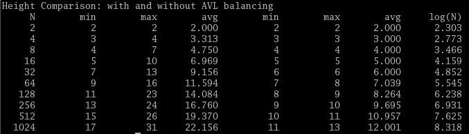

Study the AVL tree implementation of Goodrich et al. The approach consists of an AVL tree implementation AVLTree.java extending the binary search tree implementation BinarySearchTree.java which is implemented with a linked list LinkedBinaryTree.java. We have seen the linked binary tree implementation before -- see Lab 5. These classes are all part of the net.datastructures package which is contained (as far as required) in the zip archive for this lab.
Study the code in the skeleton Verify.java. You have to implement the two missing methods such that Verify prints statistics about the heights of regular Binary Search Trees and AVL trees.
The method void randomTrees( int _noNodes, int _nTrees ) creates _nTrees trees with _noNodes at random. It inserts random integer keys in a BST and AVL tree. The class Verify is employed to keep track of the height of each tree and records the minimum, maximum and average height for the AVL and BST trees.
The method
The program output should look as follows:
